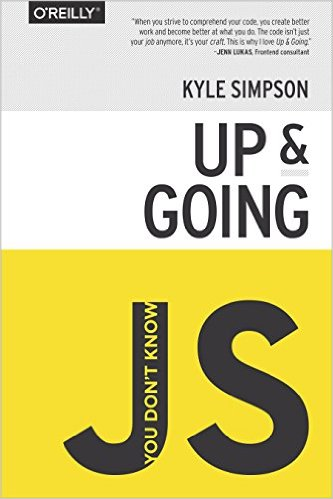
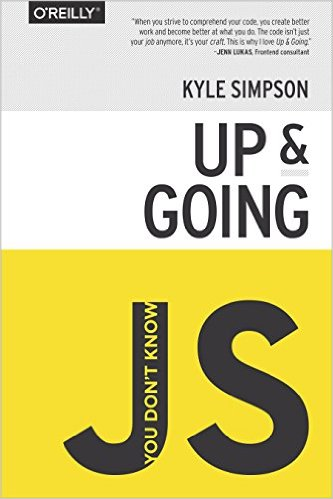

Today
- So, what can we actually make with physical computing?
- Workshopping Laura's project
- Break
- Open studio time for:
- Exploring the Arduino & physical computing with Alec
- Building things with HTML/CSS/JS with Shaunalynn
- Spec'ing and mocking up your project with Molly & Bakhtiar
So, what can you actually make, in a few months, as a beginner, that's physical?
 {% for i in (0..9) %}
{% endfor %}
{% include break-slide.html %}
{% for i in (0..9) %}
{% endfor %}
{% include break-slide.html %}
Specifying Your Projects
When is it specific enough?
Open Studio Time
- Exploring the Arduino & physical computing with Alec
- Building things on the screen from scratch with Shaunalynn
- Expanding on your project's mockup & spec with Molly & Bakhtiar
Arduino Demo Materials
{% include nextweek.html %}
 
